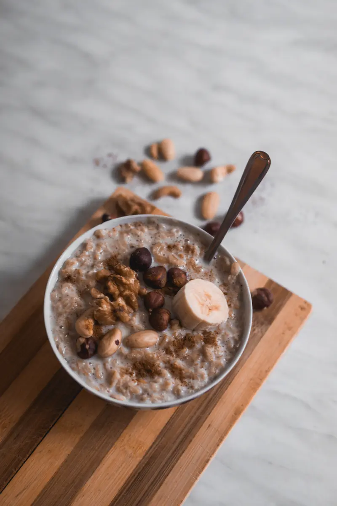

HOT OATMEAL

A highly adaptable oat recipe
Oats are your best friend for breakfast, and they're shelf stable, so I
recommend stocking up and buying in bulk.
This recipe is one that you can feel free to customize. After all, you are
the big deal of your hot oatmeal.
Ingredients:
- 1/2 c. rolled oats
- 1 c. milk of your choice
- Chopped fruit of your choice
- 1 Tbsp honey, maple syrup (optional)
- 1/2 tsp vanilla extract
- Salt to taste
Steps:
-
Place oats, fruit, vanilla, and milk over medium heat in a small pot.
- Cook—stirring occasionally—until thick, about 5-8 minutes.
-
Add honey or maple syrup and a pinch of salt, and taste. Add more
sweetener or salt to taste.
- Enjoy!
Home